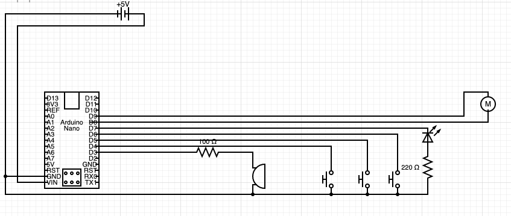

Amazing Gravity
The aMazing Gravity arcade game was created as my final project in the digital electronics class at my highschool. Using an arduino, LEDs, buttons, switches, an and gate IC, a buzzer, and a motor, me and my partner created a unique arcade game consisting of two parts.
The first part the player must navigate a ball through a maze using the two input buttons. The player has 30 seconds to do so before the game timer ends. If the player successfully drops the ball out of the maze into the second part. The ball enters a plinko inspired zone, where the ball can fall into any of the five scoring areas. The closer to the middle the ball lands, the more points are awarded. If the ball does not manage to exit the maze within the 30 seconds, the game is over, and no points are awarded.
Pictures

Video
Design Process
This version of the project was actually the third (see links below), being the culmination of two different classes, and three different projects, each building on eachother. I was not a part of the first two projects, and thus had no contribution to the physical build, and the graphics. This was the work of my partner whose website you can find below. She designed and built the maze, and everything else other than the electronics.
That is where I came in. The state of the project when I joined the group was at a good point of development, coming from the previous machine control project in a previous class. However this meant that it utilized the VEX system of parts mentioned in a previous post. This system has its limitations, so by taking out the old electronics and using an arduino to drive the project I was able to implement new features.
This included a new controller system with a start button, two input buttons, and a timer LED. This new controller was an improvement over the old one, using less inputs. The more powerful arduino microcontroller provided for more advanced software that could reduce the amount of inputs. The old system used a separate button that would let the operator of the game reset the whole maze. The new software however allowed the operator to just hold down the start button for a few seconds. Other new features included an LED and Buzzer that would progressively flash / buzz faster and faster as the timer creeped down. As opposed to just a constantly flashing LED.
There were some design challenges while making this project. First of all being the motor, which eventually required a motor controller to provide enough current to move the maze. In addition we had to find a ball that was light enough for the maze, but heavy enough to depress the limit switches. This required me and my partner to make balls out of ping pong balls and clay to make the perfect weight.
Circuit

Conclusion
I was not too happy with the result of this project. Everything should’ve gone off without a hitch, but first our original motor controllers didn’t work. Then when everything was finished we had the issue with the ball. And to top all of that off, when he had finally gotten it finished and filmed, a resistor on the arduino fried itself for unknown reasons. This rendered the project not functional